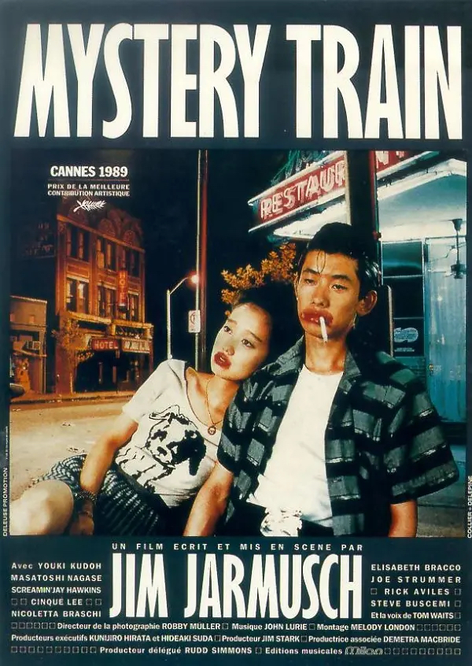

Mystery Train (1989)
Dir. Jim Jarmusch
Pop Artifact: Elvis Presley Mythology & Retro Rock 'n' Roll
Jun and Mitsuko, two teenage rock-and-roll pilgrims from Yokohama, arrive in a decaying Memphis in search of the ghost of Elvis Presley. Instead of a vibrant musical mecca, they find a desolate, sun-bleached ghost town. Wandering through dilapidated streets and a rundown hotel run by a slick night clerk, their journey is a deadpan, cool exploration of how foreign pop-culture myths often outshine the gritty, melancholic reality of their origins. They are the ultimate flâneurs, entirely consumed by the shadow of an idol.